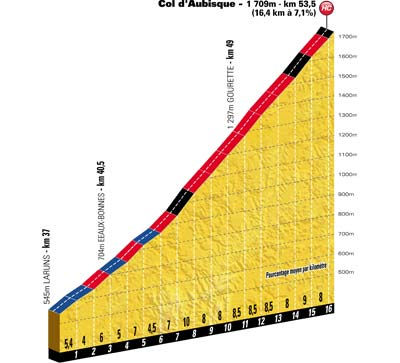
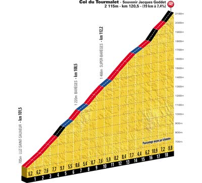
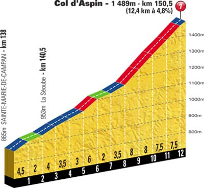
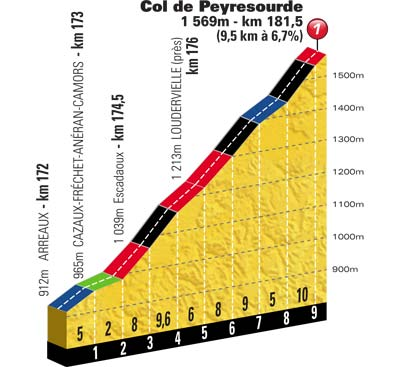

- Km 53.5 - Col d'Aubisque (1 709 m) - 16.4 km de montée à 7.1 % - Catégorie H
- Km 120.5 - Col du Tourmalet (2 115 m) - 19.0 km de montée à 7.4 % - Catégorie H
- Km 150.5 - Col d'Aspin (1 489 m) - 12.4 km de montée à 4.8 % - Catégorie 1
- Km 181.5 - Col de Peyresourde (1 569 m) - 9.5 km de montée à 6.7 % - Catégorie 1




|